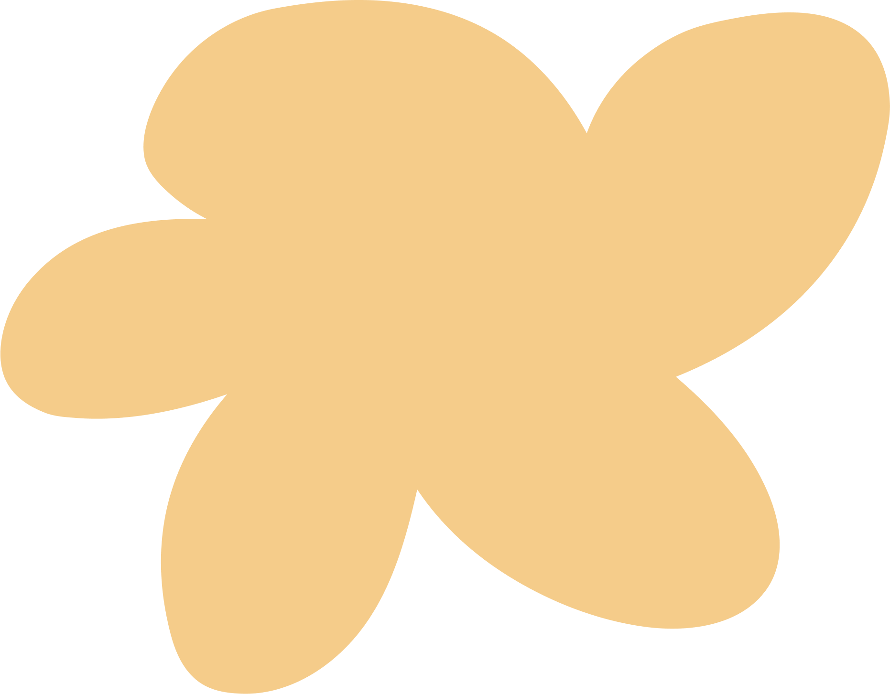
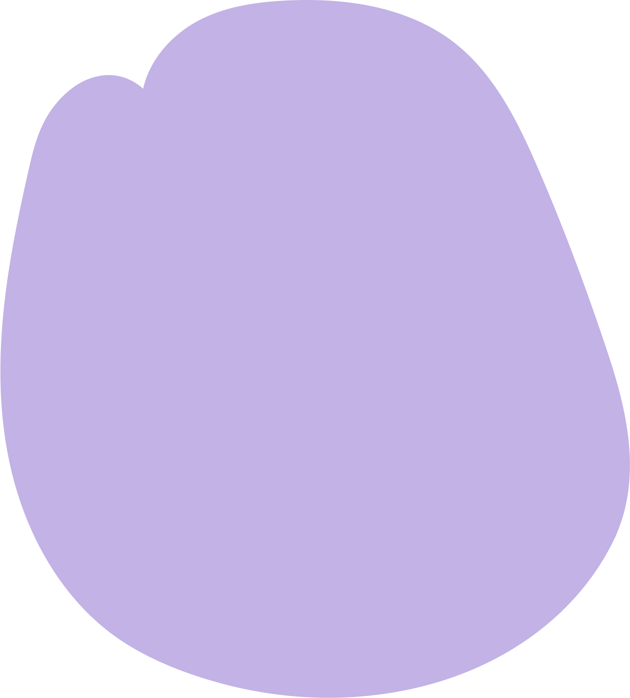
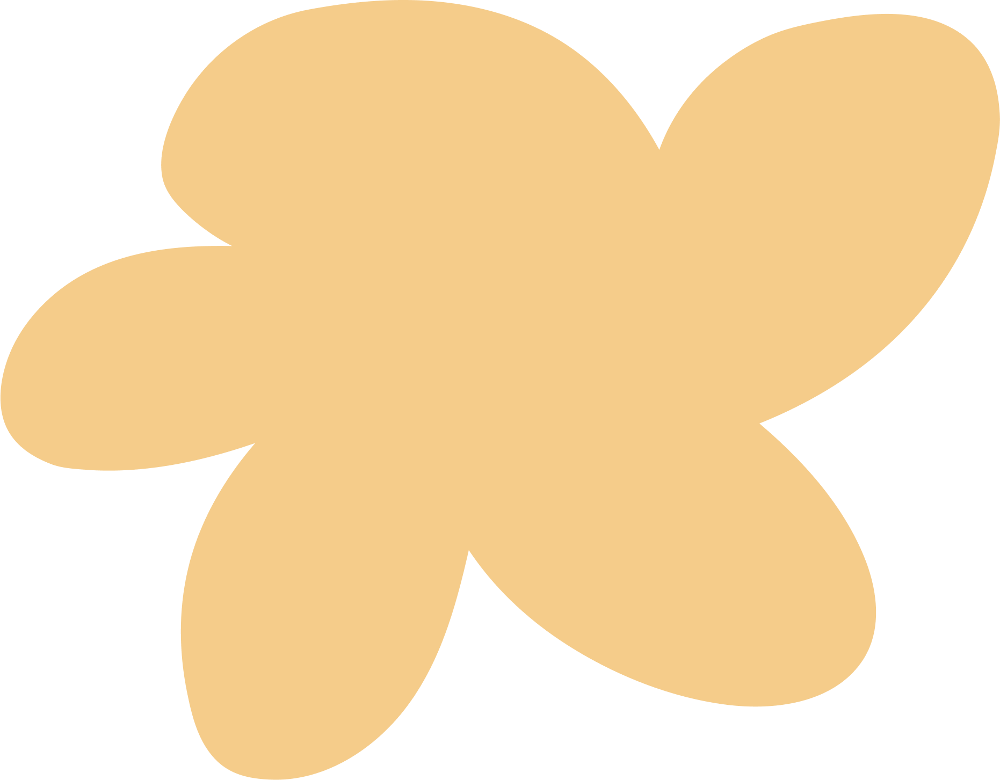
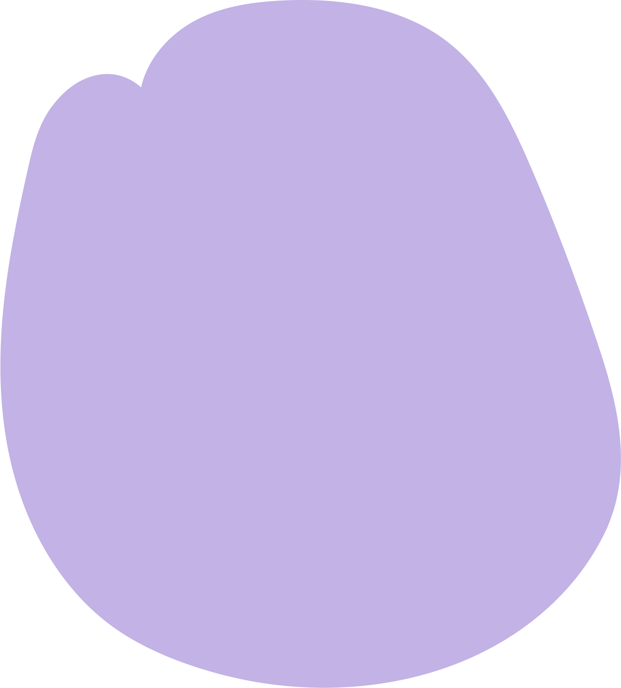

Rolklaver
De Rolklaver is een belangrijke plant. Deze plant trekt namelijk de Icarusblauwtje vlinders aan, zonder deze plant zou er geen nieuwe generatie van deze vlindersoort voort blijven bestaan.
De Rolklaver is een belangrijke plant. Deze plant trekt namelijk de Icarusblauwtje vlinders aan, zonder deze plant zou er geen nieuwe generatie van deze vlindersoort voort blijven bestaan.
De Vogelwikke trekt onder andere de St Jans vlinder aan. Dit is een donkerkleurige vlinder met velle rode stippen. De Vogelwikke trekt ook hommels en andere soorten bijen aan. Naast de vrolijke paarse kleur brengt deze plant dus veel vrolijkheid met zich mee!
De vuilboom is een kleine boom/ struik met vel rode besjes. De vuilboom wordt ook wel een insectenmagneet genoemd. De boom trekt allerlei soorten insecten aan en natuurlijk ook vlinders. Een van de vlinders die deze boom bezoekt, is de Citroenvlinder.
 

Home
Planten & Vlinders
Locaties


Home
Planten & Vlinders
Locaties